💼 Gestão de Vagas — Projeto Spring Boot
🚀 Descrição Geral
Este projeto foi desenvolvido utilizando o Spring Framework e a linguagem Java, abordando conceitos essenciais da Programação Orientada a Objetos (POO) e boas práticas de arquitetura.
O sistema tem como objetivo oferecer uma plataforma de cadastro e gerenciamento de vagas de tecnologia, onde:
- 🏢 Empresas podem realizar seu cadastro e publicar vagas.
- 👩💻 Candidatos podem criar perfis, visualizar oportunidades e se candidatar.
🧩 Principais Tecnologias e Recursos Utilizados
- Spring Boot, Spring Security, Spring Data JPA
- Thymeleaf integrado com TailwindCSS (Front-end)
- Swagger para documentação dos endpoints
- JUnit e Mockito para testes unitários
- Prometheus para monitoramento da aplicação
- Princípios SOLID e boas práticas de clean code
🐳 Infraestrutura e Deploy
A aplicação é totalmente conteinerizada com Docker, utilizando imagens hospedadas no DockerHub, e foi implantada na AWS (EC2 e RDS).
Além disso: - ⚙️ Foram configurados GitHub Actions para CI/CD. - 🔐 As secrets e variáveis de ambiente são gerenciadas via GitHub. - 🌐 Conexão com o RDS (MySQL) feita diretamente via extensão de banco de dados no VS Code.
Exemplo de host usado na conexão:
db-gestao-vagas.c96cuumyu0ti.us-east-2.rds.amazonaws.com
Demonstração do Projeto
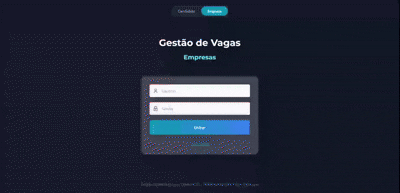
# Boas práticas em programação Orientadaa Objetos utilizadas nesse projeto
- Single Responsability (SOLID)
- KISS
- YAGNI
- Unit tests
- Integration tests
- JavaDoc
# 📈Ferramentas de monitoramento utilizadas
Nesse projeto utilizei apenas o Prometheus no final. Teste os endpoints:
Obs: devido a limitações de hardware, precisei retirar o Grafana do projeto até expandir meu SSD pra utilizar maiores imagens no docker.
Docmentação
Swagger documentation:
Endpoints:
- Job listing
- Job registration
- Delete job
- Candidate Auth
- Job Apply
- Candidate profile
- Candidate Register
- Job listing by candidate
- Company register
- Auth company
Swagger endpoints
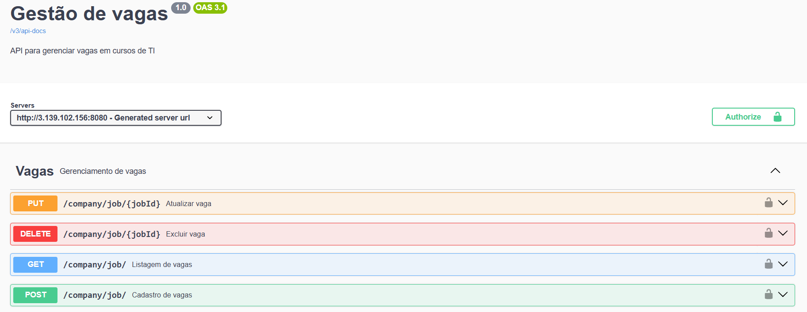
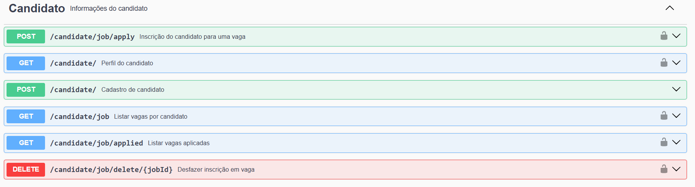
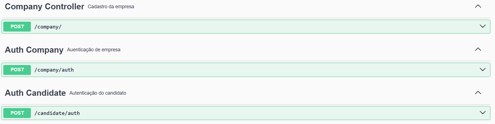
Back-end
- Java
- SpringBoot
🏗 Fluxo de Atualização de Vagas
👤 Cliente / Frontend
- HTTP Request (GET, POST, PUT, DELETE)
👇
📝 Controller (JobController)
- Recebe request
- Valida input / DTO
- Pega companyId / path params / headers
- Chama Use Case correspondente
👇
⚙️ Use Case
- Lógica de negócio
- Valida regras
- Prepara entidade
- Chama Repository
👇
💾 Repository (JobRepository)
- Acessa banco de dados
- Cria, atualiza, deleta ou busca dados
Estrutura do projeto BackEnd
├── src/main/java/br/com/felipevalboeno/gestao_vagas/
│ ├── config/
│ ├── exceptions/
│ ├── modules/
│ │ ├── candidate/
│ │ │ └── controllers
│ │ │ └── dto
│ │ │ └── entity
│ │ │ └── repository
│ │ │ └── useCases
│ │ ├── company/
│ │ │ └── controllers
│ │ │ └── dto
│ │ │ └── entity
│ │ │ └── repository
│ │ │ └── useCasess
│ │ └── ...
│ ├── providers/
│ └── security/
└── application.properties
Front-end
- Tailwind
- RestTemplate para conectar com o backend
Pages
Candidato
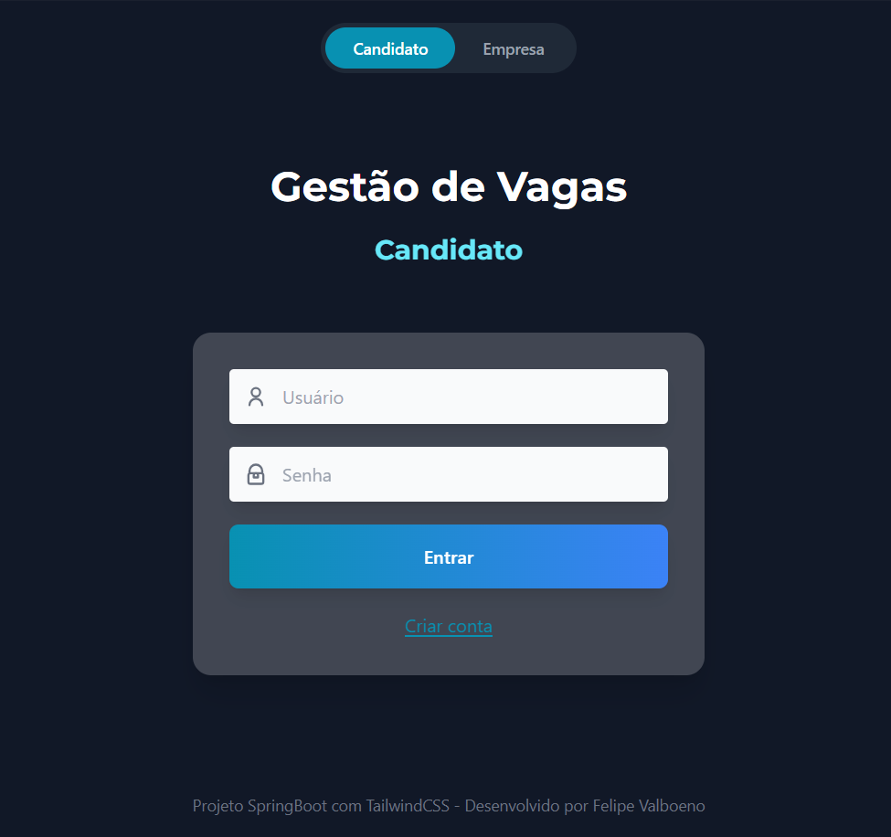
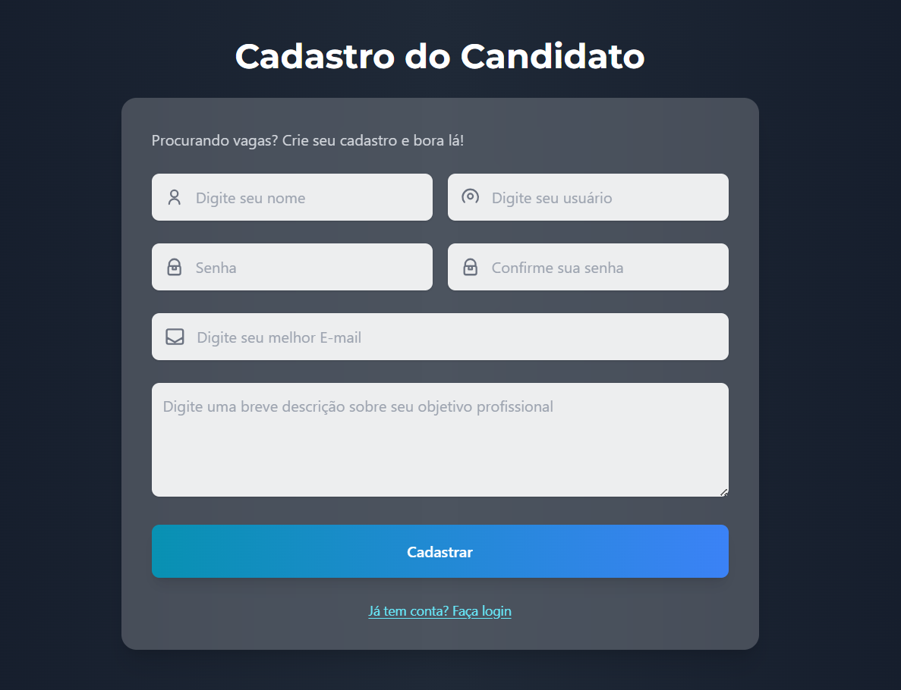
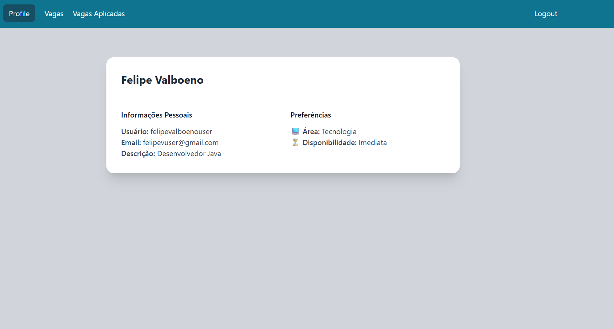
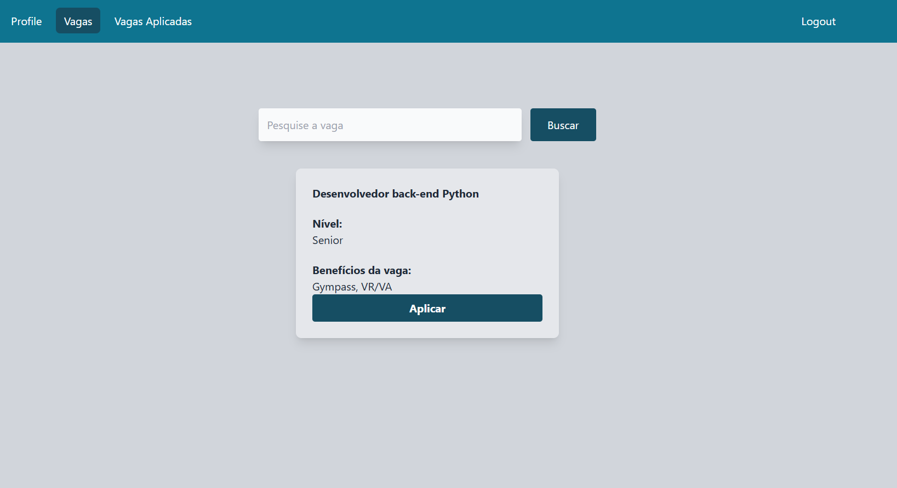

Empresa
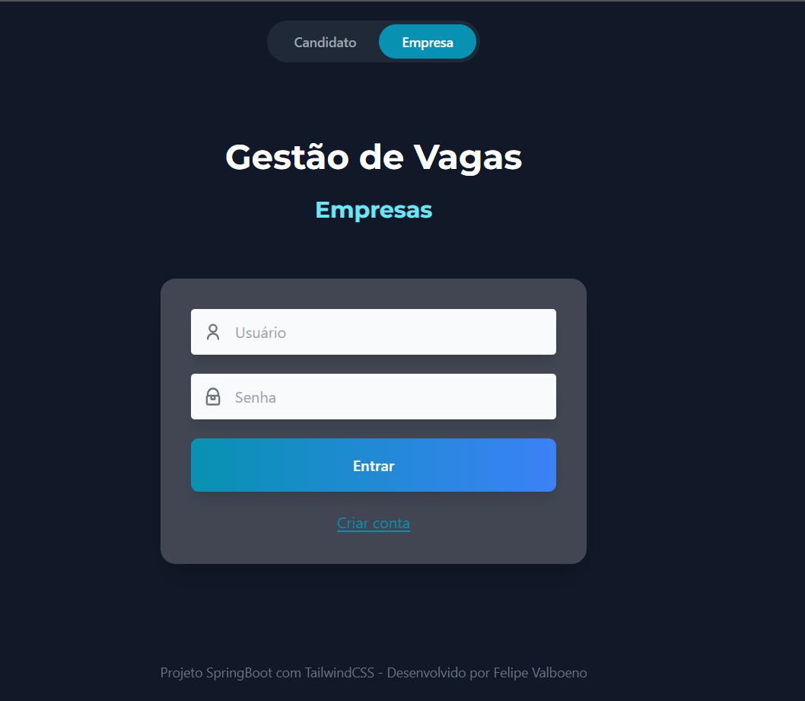
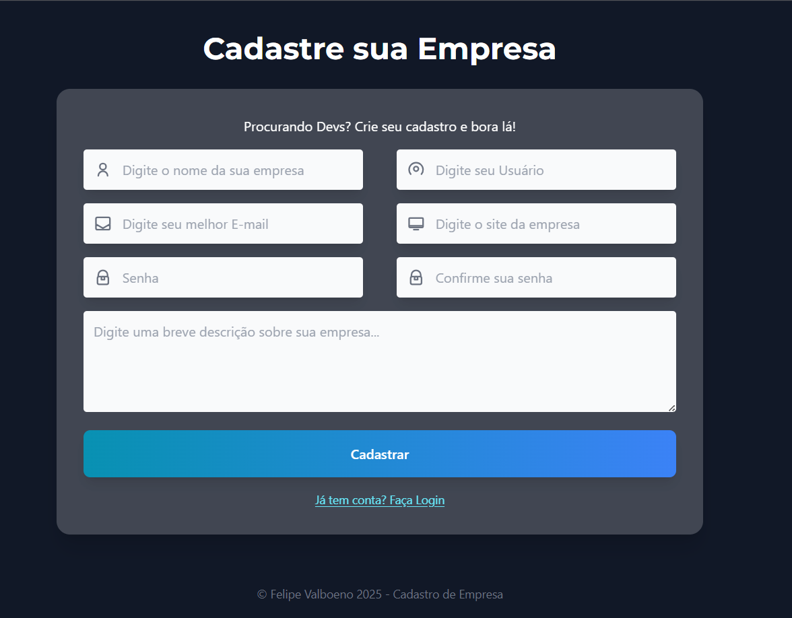
 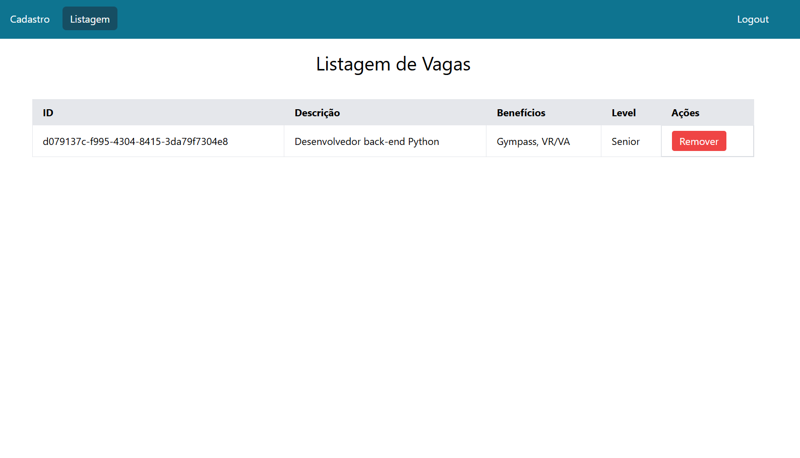
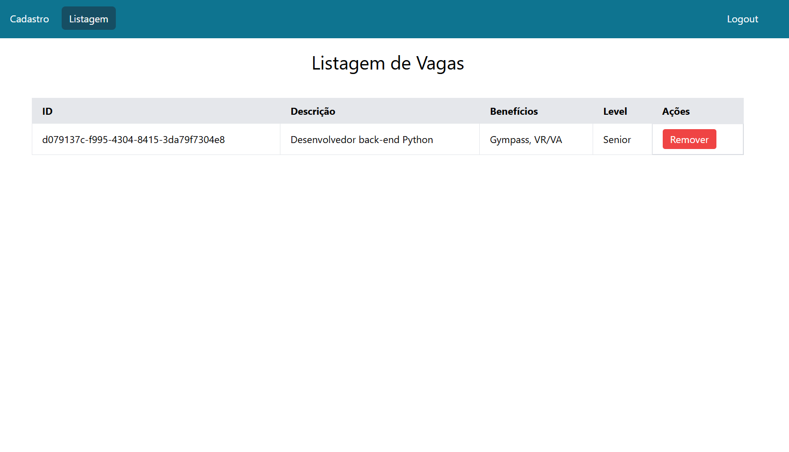
Deploy com Render
Pra subir essa aplicação, usei o Render (cloud hosting) por ter uma versão grátis pra estudo.
Como fazer isso?
- Faça login no Render usando sua conta do GitHub
- Faça as primeiras configurações simples, como configurar nome, banco de dados...
- Crie um dockerfile no seu projeto com a configuração do dockerfile config vista mais abaixo.
- Crie umnovo web service no Render, e faça o deploy com seu último commit no git.
# =========================
# Stage 1: Build
# =========================
FROM maven:3.9.3-eclipse-temurin-17 AS build
# Define diretório de trabalho
WORKDIR /app
# Copia apenas o pom.xml para cache do Maven
COPY pom.xml .
# Baixa dependências sem reconstruir código
RUN mvn dependency:go-offline -B
# Copia o código-fonte
COPY src ./src
# Build do projeto, gera o .jar
RUN mvn clean package -DskipTests
# =========================
# Stage 2: Runtime
# =========================
FROM openjdk:17-jdk-slim
# Define diretório de trabalho
WORKDIR /app
# Copia o .jar do stage de build
COPY --from=build /app/target/gestao_vagas-0.0.1-SNAPSHOT.jar app.jar
# Expõe a porta do Spring Boot
EXPOSE 8080
# Comando para rodar a aplicação
ENTRYPOINT ["java", "-jar", "app.jar"]
ENTRYPOINT [ "java", "-jar", "app.jar" ]
Criando um banco de dados e webserver na AWS com RDS e EC2
- Crie uma conta na Amazon AWS
- Pesquise por RDS e vá em criar banco de dados
- Escolhaa standard creation > PostgreSQL > Models: Free tier > Create database
- Pesquise por EC2
- AMI - Kernel6.1 - free > Instance: t3.MICRO - free
- Crie um par de chaves: RSA > .pem
- Execute a instancia e faça a conexão
Criando DockerHub
- Com o DockerHub, você pode salvar uma imagem pronta pra uso da sua aplicação, da mesma forma que você salva seu código no GitHub.
- Você só precisa de um arquivo .yml na raiz do seu projeto, o meu ficou assim:
name: Gestão de Vagas Application
on:
push:
branches: [main]
jobs:
build:
runs-on: ubuntu-latest
steps:
- name: Checkout code
uses: actions/checkout@v3
- name: Set up Java
uses: actions/setup-java@v3
with:
distribution: temurin
java-version: 17
- name: Build project
run: mvn clean install
- name: login docker
run: docker login -u ${{secrets.DOCKER_USERNAME}} -p ${{secrets.DOCKER_PASSWORD}}
- name: Build docker image
run: docker build -t felipevalboenodocker/gestao_vagas .
- name: Publish image
run: docker push felipevalboenodocker/gestao_vagas
OBS:
- I used Putty to configure the Docker on EC2 AWS.
- I used a Database Client extension to conect a new postgrSQL to EC2 endpoint, and I change the DTABASE_URL on github to this new database that I create.
How to start the application after all this configurations
- Open your Putty app
- Connect on the saved session
- execute: cd ~/actions-runner
- Check on your github if the runner ar online, if not, execute: ./run.sh
- execute: docker start gestao-vagas
- execute: docker ps
- execute: docker logs gestao_vagas , check if the application started as well
- Open Swagger: http://
:8080/swagger-ui/index.html an do a test.